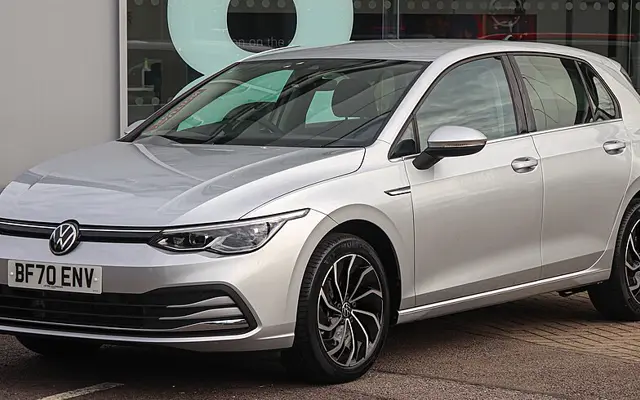

Par Motor › Precios por modelo › Volkswagen Golf
Precio de segunda mano · noviembre de 2026¿Cuánto vale un Volkswagen Golf de segunda mano?

Precio justo estimado de un Volkswagen Golf usado en España, año por año, con los kilómetros normales para su edad y en buen estado: de 4.700 € a 37.500 €. Para tasar el tuyo con sus kilómetros reales y su estado, usa el tasador gratis.
Precios del Volkswagen Golf por año
Golf V (2003–2008)
Precio de nuevo: 1.4 80 CV, 16.000 € · 1.9 TDI 105 CV, 20.000 € · 1.6 FSI 115 CV, 18.500 €
| Año | Km normales | 1.4 80 CV · Gasolina | 1.9 TDI 105 CV · Diésel | 1.6 FSI 115 CV · Gasolina |
|---|---|---|---|---|
| 2008 | 100.000 km | 6.300 € | 7.700 € | 7.300 € |
| 2007 | 100.000 km | 6.000 € | 7.200 € | 6.900 € |
| 2006 | 100.000 km | 5.600 € | 6.800 € | 6.500 € |
| 2005 | 100.000 km | 5.300 € | 6.500 € | 6.200 € |
| 2004 | 100.000 km | 5.000 € | 6.100 € | 5.800 € |
| 2003 | 100.000 km | 4.700 € | 5.800 € | 5.500 € |
Consumo de aceite exagerado (hasta un litro cada mil kilómetros) por unos segmentos de pistón defectuosos. La reparación consiste en cambiar pistones y segmentos. Comprueba si ya se hizo y cuánto aceite gasta.
La cadena de distribución se estira antes de tiempo y puede saltar un diente, con una avería muy cara. Un traqueteo metálico unos segundos al arrancar en frío es la señal de alarma. Desde 2013-2014 se montó otro motor con correa que no tiene este problema. Pregunta si ya se cambiaron la cadena y el tensor.
Golf VI (2008–2012)
Precio de nuevo: 1.4 TSI 122 CV, 20.000 € · 1.6 TDI 105 CV, 22.000 € · 2.0 TDI 140 CV, 26.000 €
| Año | Km normales | 1.4 TSI 122 CV · Gasolina | 1.6 TDI 105 CV · Diésel | 2.0 TDI 140 CV · Diésel |
|---|---|---|---|---|
| 2012 | 100.000 km | 9.900 € | 10.600 € | 12.500 € |
| 2011 | 100.000 km | 9.400 € | 10.000 € | 11.800 € |
| 2010 | 100.000 km | 8.900 € | 9.500 € | 11.200 € |
| 2009 | 100.000 km | 8.400 € | 8.900 € | 10.600 € |
| 2008 | 100.000 km | 7.900 € | 8.400 € | 10.000 € |
La cadena de distribución se estira antes de tiempo y puede saltar un diente, con una avería muy cara. Un traqueteo metálico unos segundos al arrancar en frío es la señal de alarma. Desde 2013-2014 se montó otro motor con correa que no tiene este problema. Pregunta si ya se cambiaron la cadena y el tensor.
Consumo de aceite exagerado (hasta un litro cada mil kilómetros) por unos segmentos de pistón defectuosos. La reparación consiste en cambiar pistones y segmentos. Comprueba si ya se hizo y cuánto aceite gasta.
Golf VII (2012–2017)
Precio de nuevo: 1.0 TSI 115 CV, 20.500 € · 1.6 TDI 110 CV, 23.000 € · GTE (enchufable) 204 CV, 39.000 €
| Año | Km normales | 1.0 TSI 115 CV · Gasolina | 1.6 TDI 110 CV · Diésel | GTE (enchufable) 204 CV · Híbrido enchufable |
|---|---|---|---|---|
| 2017 | 100.000 km | 11.800 € | 14.700 € | 20.300 € |
| 2016 | 100.000 km | 11.700 € | 14.000 € | 20.000 € |
| 2015 | 100.000 km | 11.500 € | 13.200 € | 19.700 € |
| 2014 | 100.000 km | 11.300 € | 12.400 € | 19.400 € |
| 2013 | 100.000 km | 10.800 € | 11.800 € | 18.500 € |
| 2012 | 100.000 km | 10.200 € | 11.100 € | 17.500 € |
Golf VII.5 (restyling) (2017–2020)
Precio de nuevo: 1.0 TSI 115 CV, 22.000 € · 1.6 TDI 115 CV, 25.000 € · GTE (enchufable) 204 CV, 40.000 €
| Año | Km normales | 1.0 TSI 115 CV · Gasolina | 1.6 TDI 115 CV · Diésel | GTE (enchufable) 204 CV · Híbrido enchufable |
|---|---|---|---|---|
| 2020 | 95.000 km | 13.600 € | 16.000 € | 22.200 € |
| 2019 | 100.000 km | 13.000 € | 16.000 € | 21.200 € |
| 2018 | 100.000 km | 12.800 € | 16.000 € | 21.000 € |
| 2017 | 100.000 km | 12.700 € | 16.000 € | 20.800 € |
Golf VIII (2020–hoy)
Precio de nuevo: 1.0 eTSI 110 CV, 27.000 € · 2.0 TDI 115 CV, 30.000 € · eHybrid (enchufable) 204 CV, 40.000 €
| Año | Km normales | 1.0 eTSI 110 CV · Gasolina | 2.0 TDI 115 CV · Diésel | eHybrid (enchufable) 204 CV · Híbrido enchufable |
|---|---|---|---|---|
| 2026 | 5.000 km | 28.200 € | 30.100 € | 37.500 € |
| 2025 | 20.000 km | 24.700 € | 26.300 € | 32.900 € |
| 2024 | 35.000 km | 23.300 € | 24.900 € | 31.100 € |
| 2023 | 50.000 km | 22.000 € | 23.500 € | 29.300 € |
| 2022 | 65.000 km | 20.800 € | 20.400 € | 27.700 € |
| 2021 | 80.000 km | 18.800 € | 19.000 € | 25.100 € |
| 2020 | 95.000 km | 16.700 € | 19.200 € | 22.200 € |
Kilómetros normales: 15.000 al año en gasolina, híbridos y eléctricos, y 20.000 en diésel, con un máximo de 100.000 km (por encima no tasamos: el precio depende demasiado del historial de cada coche). Cifras redondeadas a 100 €.
Preguntas frecuentes
¿Cuánto vale un Volkswagen Golf de segunda mano?
Según el año, la versión y los kilómetros, un Volkswagen Golf usado vale hoy de 4.700 € a 37.500 € en España. El más barato de nuestra tabla es un 1.4 de 2003 (4.700 €) y el más caro un eHybrid (enchufable) de 2026 (37.500 €). Son precios justos estimados entre particulares y profesionales, con los kilómetros normales para su edad y en buen estado.
¿Cuánto valor pierde un Volkswagen Golf al año?
Con unos años encima, un Volkswagen Golf pierde alrededor de un 6 % de su valor cada año (calculado sobre el 1.0 eTSI de la generación Golf VIII). Los primeros años la caída es mayor y a partir de los 70.000 km se acelera.
¿Qué motorizaciones tiene el Volkswagen Golf?
En nuestra base de datos hay versiones gasolina, diésel, híbrido enchufable y eléctrico, en 5 generaciónes: Golf V, Golf VI, Golf VII, Golf VII.5 (restyling) y Golf VIII.
¿Qué motores del Volkswagen Golf dan problemas?
Ojo con el 1.8 y 2.0 TFSI/TSI (consumo de aceite) (GTI 2.0 TFSI, GTI 2.0 TSI, R 2.0 TSI, 2008–2012) y el 1.2 y 1.4 TSI/TFSI de primera generación (cadena) (1.4 TSI, 1.2 TSI, 2006–2012): son motores con fallos graves y muy extendidos. Antes de comprar uno, pide el historial de mantenimiento y comprueba si ya se hizo la reparación. El resto de motores no tiene problemas fuera de lo normal.
¿Cómo sé si me piden demasiado por un Volkswagen Golf?
Abre el tasador de Par Motor, elige el Volkswagen Golf, el año y los kilómetros reales, y escribe lo que te piden. Te diremos si está por debajo del precio justo (chollo) o por encima (caro). Es gratis y no pide registro ni matrícula.
Historia y curiosidades
Otros Volkswagen
- Amarok
- Beetle
- Caddy
- CC y Arteon
- Eos
- Golf Plus y Sportsvan
- ID. Buzz
- ID.3
- ID.4
- ID.5
- ID.7
- Jetta
- Multivan y California
- Passat
- Polo
- Scirocco
- Sharan
- T-Cross
- T-Roc
- Taigo
- Tiguan
- Touareg
- Touran
- up!
Compara su coste real
El precio de compra es solo una parte. Mira cuánto te costaría al mes con combustible, seguro, neumáticos, mantenimiento y lo que pierde de valor.
Abrir el comparador →